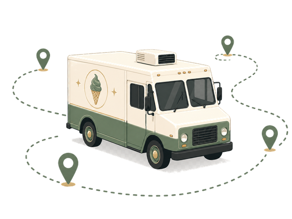

I design content systems that help product teams and users succeed.
I turn complex workflows and systems into clear, usable content across documentation, UX writing, and in-app experiences.
I collaborate across product, design, engineering, support, and marketing.
I make the hard things easy to find, understand, and use.
I use data and insight to improve content health and drive adoption.
How I scaled Writing Practices at ScoopRoute
I consolidated scattered product knowledge for a complex software product by meeting web, mobile, ux content and release documentation needs.
View case study →
Samples of the systems I build
My documentation, content, and processes that scale.
Help Center Article
Task-based article with embedded best practices for skimmability, structure, and findability.
DocumentationRelease Communication SOP
Reusable workflow for planning, drafting, reviewing, and publishing release notes.
ProcessContent Tagging System
Governance model for scalable tagging across content types, product areas, and audiences.
Information ArchitectureDriver App: Onboarding Flow
UX writing and microcopy for a multi-step onboarding experience.
UX WritingStyle Guide Excerpt
Principles, voice, grammar choices, and UI text patterns for consistency at scale.
Content DesignBefore & After: Content Redesign
Examples showing how structure and clarity improved accuracy and task success.
Content StrategyTerm Bank & Glossary
Cross-functional term management for product, compliance, and support.
GovernanceAI-Assisted Research Workflow
My process for using AI tools responsibly in content development.
ProcessClear communicator. Systems thinker. Team player.
With 6+ years of experience in SaaS documentation, UX writing, and in-app guidance, I partner with teams to deliver content that reduces friction and drives results.
Learn more about me →Technical writing and content design experience
Product documentation, UX writing, and in-app guidance
Leverage Pendo analytics to prioritize and continuously improve content
I elevate writers and strengthen content consistency across teams